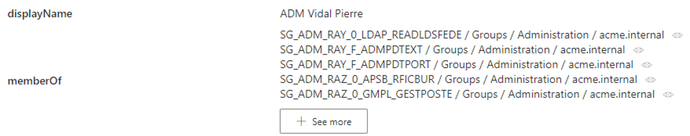
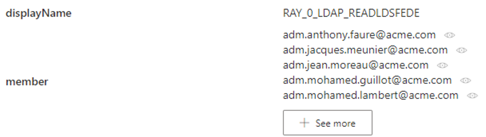
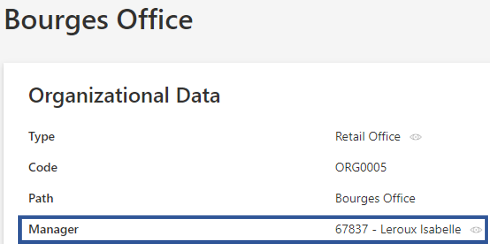
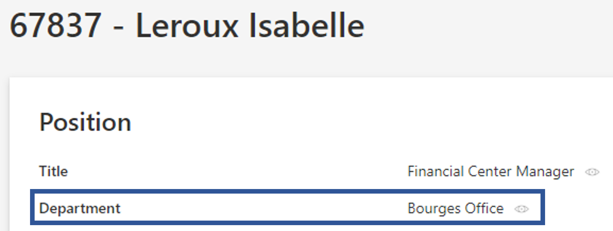
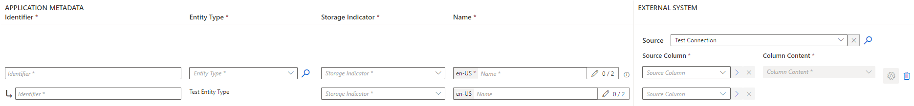
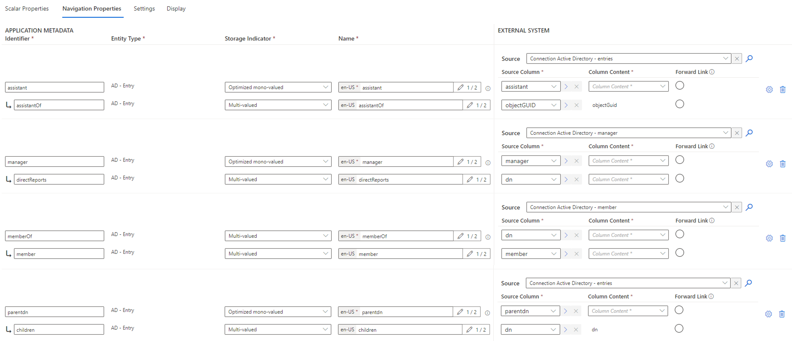
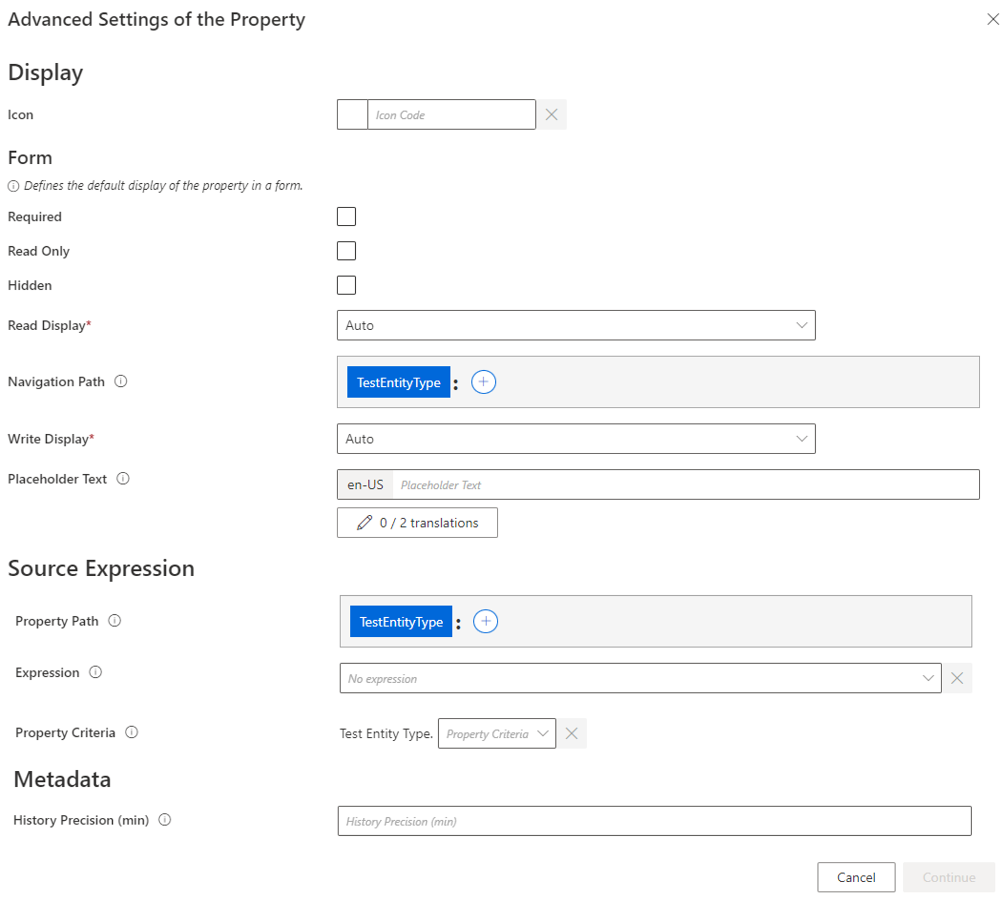
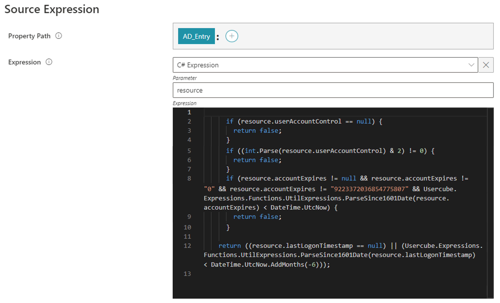

Define Navigation Properties
How to define the properties which describe the Entity Type 's relationships to other entity types.
Overview
Here you will learn to define navigation properties, which contain scalar values just like scalar properties, but which are also linked to and point to other properties, from the same entity type or to another entity type. See the Define Scalar Properties topic for additional information.
For example,
memberOfcan contain a list of groups thus linking a user to groups, and a group to other groups. In the UI,memberOfis displayed just like scalar properties, but you can click on its values to access each group in the list. Here for the AD entryADM Vidal Pierre:
Clicking on one of these groups will display said group's properties including the other side of thememberOfproperty, calledmember, which contains the list of users and groups which are members of the group. Here for the AD groupSG_APP_RAY_0_LDAP_READLDSFEDE:
As another example, a department needs to be linked to a manager who is an existing user. So the user identifier is used in the
Managerproperty to create the link between the department and the manager/user. In the UI, when looking at a given department data,Manageris displayed just like scalar properties, but you can click on its value to access the page of the department's manager.
Clicking on the manager will display said user's properties including theDepartmentproperty, which points back to the managed department.
Navigation properties can create a link:
- inside an entity type;
- between two entity types from the same connector;
- between two entity types from different connectors.
Inside Identity Manager a navigation property has a flip side, one for each linked element.
For example in the AD, the group membership of a user is represented by the properties member for groups (containing a list of users) and memberOf for users (containing a list of groups).
However, some managed systems only have one of these two sides.
The AD only uses member from among groups' properties. Users don't have a memberOf property.
But, as Identity Manager uses and links both sides, it is able to "translate" the information, so that a navigation property, which actually exists in the managed system, can be linked to the two corresponding navigation properties in Identity Manager.
When importing data to Identity Manager the member property from the AD will update the member property in Identity Manager, and Identity Manager will update the memberOf property accordingly.
Most often, properties inside Identity Manager are each linked to a property from the managed system. This way, data from the managed system can be imported into Identity Manager and stored in the corresponding property. These properties are mapped from the source (see step 3).
If the property to be created does not exist in the external source, it is impossible to map the property, but it can still be created with + Add a navigation property.
This can be used to store data needed for assignment management, but which you cannot write to the connected system. Since these properties do not exist in the connected system, they cannot be written or read.
Define the Entity Type's Navigation Properties
Define the entity type's navigation properties by proceeding as follows:
-
Start by declaring an Create the Entity Type .
-
In the entity type's Properties section, click on Navigation Properties tab.
-
Click on Map a navigation property to display existing columns from the external source, and select the properties to be used as navigations in the entity type.
-
Fill in the information fields.

If you map a column from the source, then the first line of the navigation property is about said column. The second line is about the new property to be linked to the first one, always of the entity type.
-
APPLICATION METADATA: fields about the display of the properties inside Identity Manager.
-
Identifier: must be unique among properties, without any whitespace, and be C#-compatible. See Microsoft lexical structure. -
Entity Type: always the entity type for the second property, but the first property can be mapped from any existing entity type in the application. -
Storage Indicator: describes the association that can be mono-valued (meaning 1-to-1 or many-to-1) or multi-valued (meaning 1-to-many or many-to-many).For one entity type, Identity Manager can store up to 25 optimized mono-valued navigation properties. For performance purposes, Netwrix Identity Manager (formerly Usercube) recommends choosing
optimized mono-valuedas a storage indicator as often as possible.
If the entity type contains more than 25 mono-valued properties, then a priority must be established, choosing to optimize:
1. properties displayed in forms and search bars;
2. properties used for the computation of expressions and the role model;
3. other properties. -
Name: will be displayed in the UI to identify the property.Names and identifiers:
A mono-valued property is supposed to be written in the singular, a multi-valued property is supposed to be plural. This convention facilitates maintenance.
Entity properties' names and identifiers cannot be "Id".
-
-
EXTERNAL SYSTEM: fields about the corresponding properties inside the connected application.
-
Source: connection that leads to the source file(s).You can choose the source of a new navigation property by:
- mapping the property from source so that the connection table is automatically selected as the table from this entity type;
- opening the dropdown list to choose a connection table from among the other entity types from this connector;
- clicking on the search icon to choose a connection table from among all other connectors. -
Source Column: column in the external system where the property data comes from. -
Column Content: property of the source column used to identify any resource in the association.For example, the source column
managercontains thednof users to make the association, thus we choosednas the source content.
-
For example,
AD - Entryuses the following navigation properties:Entries;assistant;assistantOf;manager;directReports;memberOf;member;parentdn;children.
-
-
Click on the Gear symbol to add advanced settings if needed.

-
Icon: can be chosen from Microsoft's list and will be displayed with the property among users' data. -
Source Expression: expression that defines the property based on at least one source object. Can be defined by a property path and/or an Expressions.
For example, the scalar property
isUnusedis created to spot unused accounts via a combination ofaccountExpiresandlastLogonTimestamp:
-
Flexible Comparison Expression: expression that inserts adaptable comparison flexibility when using a searchbar for the property. -
History Precision: time period over which Identity Manager historically records only one value.For example, the scalar property
lastLogonTimestampof an AD resource is modified every time the user connects to the application. Every modification triggers the historization of all properties for said resource inside the database. Hence, the database can quickly become full of data. In order to lighten the database, we can set theHistory Precisionoption to one week (10080 minutes) so that resources are historized once a week at most (concerning changes onlastLogonTimestamp). In the meantime, in case of a change, instead of historizing resources with all their properties, onlylastLogonTimestampis updated with the new value.
Clicking on Continue closes the pop-up window so that you can continue the configuration of the entity type. But it does not save anything.
-
Reload
Every time an entity type mapping is modified and saved, a green pop-up appears saying that you should reload the schema to implement the changes. You do not need to click on the button every time. It is essential though to reload after the final changes are made.

The Reload button mostly enables your changes to appear in the menu items, which configure the left menu links on the UI's home page.
You can find the Reload button either on the green warning, or on the connector's dashboard.
Next Steps
After the entity type is created with its scalar properties and keys, and navigation properties, you can Set Resources' Display Names .